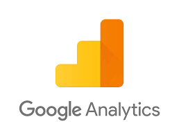

This visualization uses the power of D3, a JavaScript library for visualizing data with HTML, SVG, and CSS.
Google Analytics is an extremely powerful way for businesses to set themselves up for success and understand their user demographics and behaviors. This data is essential in creating a site experience designed to maximize conversions and to leverage this data across many marketing channels for further success.
- DataSet - CSV